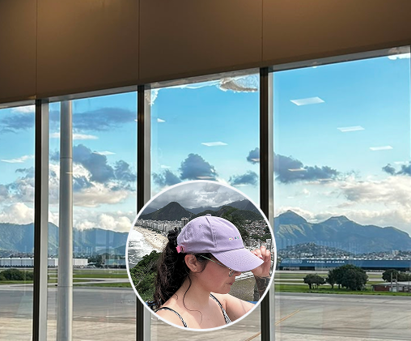
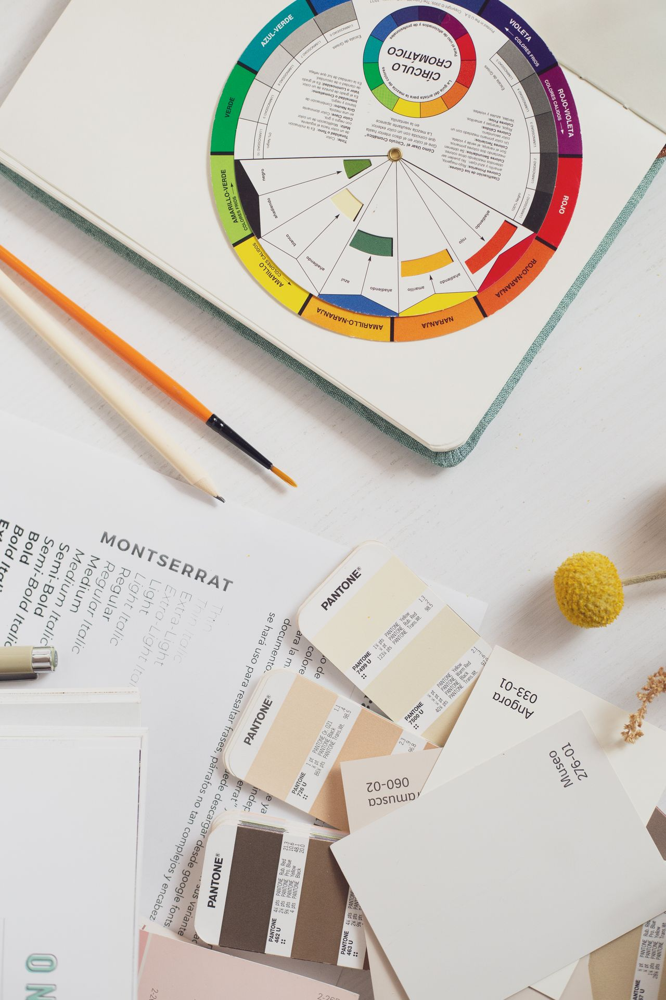
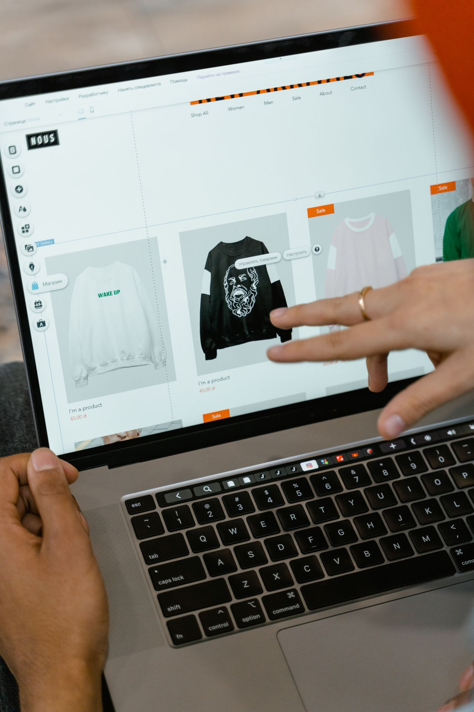

ANA CERÓN NOVOA
DESARROLLO Y DISEÑO WEB
Cada proyecto con una solución pensada desde el detalle.
Servicios
PROYECTOS DESTACADOS

FANSTORE LADY GAGA
ECOMMERCEBIO
"Me importa entender bien antes de construir. Llevo una década trabajando con clientes y eso define cómo escucho, propongo y ejecuto".
Foco en Front-End, formación en Duoc UC y Artes Visuales, con ojo para el detalle y el propósito de comunicar lo que hace única a cada marca.
STACK & HABILIDADES
#WordPress
#PHP
#CSS
#JavaScript
#Figma
#Adobe
#VS Code
#UI/UX
#SEO
#Elearning
#Mobile First
#Fotografía
#Inglés
SERVICIOS



BITÁCORA
Una sección en la cual comparto mis experiencias en base a aprendizajes, dificultades y encantos que tiene el desarrollar y diseñar sitios web. Una forma de registrar el camino recorrido a través de la redacción de contenidos.
Explorar